器材库 > 35mm画幅可换镜头数码相机 > EOS-1D X Mark II
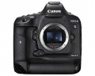
规格总览
产品类型
35mm画幅可换镜头数码相机
发布日期
2016-02-02
影像规格
影像传感器
CMOS
影像传感器尺寸
约35.9×23.9mm
总像素
约2150万
有效像素
约2020万
影像处理器
双DIGIC 6+数字影像处理器
静态图像尺寸
L（大）：约2000万像素（5472×3648）M1（中1）：约1270万像素（4368×2912）M2（中2）：约890万像素（3648×2432）S（小）：约500万像素（2736×1824）RAW：约2000万像素（5472×3648）M-RAW：约1120万像素（4104×2736）S-RAW：约500万像素（2736×1824）
静态图像格式
JPEG, RAW, RAW+JPEG
画幅比
3:2
短片尺寸
4096×2160（4K视频）：59.94p/50p/29.97p/25p/24p/23.98p 1920×1080（全高清）：119.9p/100p/59.94p/50p/29.97p/25p/24p/23.98p
短片格式
MOV, MP4
除尘系统
自动、手动、添加除尘数据
镜头和对焦
镜头卡口
Canon EF
兼容镜头
佳能EF系列镜头（EF-S、EF-M镜头除外）
对焦系统类型
TTL辅助影像重合，相位检测
对焦点
61点（最多41个十字型对焦点）
对焦模式
单次自动对焦、人工智能伺服自动对焦、手动对焦
手动对焦
支持
曝光控制
测光系统
使用36万像素 RGB+红外 测光感应器、216区TTL全开光圈测光EOS iSA（智能被摄体分析）系统
测光模式
中央重点测光, 评价测光, 点测光, 局部测光
测光范围
0EV~20EV
曝光模式
程序自动曝光、快门优先自动曝光、光圈优先自动曝光、手动曝光、B门曝光、自定义拍摄模式（C1、C2、C3）
拍摄模式
单拍、高速连拍、低速连拍、静音单拍、静音高速连拍、静音低速连拍、10秒自拍、2秒自拍
图像模式
自动、标准、人像、风光、精致细节、中性、可靠设置、单色、用户定义1-3
快门类型
电子控制焦平面快门
快门速度
1/8000至30秒（总快门速度范围，可用范围随拍摄模式各异）、B门
闪光同步速度
1/250
曝光补偿
±5EV以1/3或1/2EV级调整
自动曝光锁
有
ISO感光度
自动ISO、可在ISO 100-51200范围内手动设置（以1/3级或整级为单位），可扩展到L（相当于ISO 50）、H1（相当于ISO 102400）、H2（相当于ISO 204800）、H3（相当于ISO 409600）
白平衡
可使用自动（氛围优先)、自动（白色优先)、预设（日光、阴影、阴天、钨丝灯、白色荧光灯、闪光灯）、用户自定义1-5、色温(约2500-10000K)、个性化白平衡（5种设置）、白平衡偏移和白平衡包围曝光
自拍
10秒, 2秒
连拍
高速连拍： ·使用取景器拍摄：最高约14张/秒 ·使用实时显示拍摄：最高约16张/秒 低速连拍：约3张/秒 静音高速连拍：最高约5张/秒 静音低速连拍：最高约4张/秒
闪光灯
外接闪光灯
EX系列闪光灯
PC端子
有
取景器/显示屏
取景器
眼平五棱取景器
取景范围
100%
取景放大倍率
约0.76倍
屈光度调节范围
约-3.0～+1.0m-1（dpt）
对焦屏
标配Ec-C6，可更换
反光镜
快回型
取景器信息
图像类型：JPEG/RAW、拍摄模式、测光模式、白平衡、驱动模式、自动对焦操作、闪烁检测、警告符号、自动对焦状态指示灯
景深预视
有
LCD类型
彩色TFT LCD
LCD尺寸
3.2英寸
LCD像素
约162万
LCD特性
触摸屏
亮度调节级数
7级
文件输入/输出
存储卡
CF, CFast
数据接口
USB3.0
视频/音频接口
C型HDMI接口
支持打印协议
DPOF
电源
电池
电池 LP-E19或LP-E4N/LP-E4（1节）
续航能力
使用取景器拍摄：23℃时约1210张、0℃时约1020张使用实时显示拍摄：23℃时约260张、0℃时约240张短片拍摄时间：23℃时约2小时20分钟，0℃时约2小时
机身规格
材质
镁合金
颜色
黑色
尺寸
约158×167.6×82.7mm
重量
仅机身约1340g / (CIPA方针)约1530g
其它
用户自选功能
34种
配件端口
耳机, 脚架螺丝孔, 麦克风输入端子
工作温度
约0~45℃
工作湿度
不高于85%
附件
EOS数码解决方案光盘，软件使用说明书光盘，锂电池LP-E19，电池充电器LC-E19（含电源线），连接线保护器，USB接口连接线IFC-150U II，相机宽背带L7
备注
具备GPS功能
匿名网友2018-04-02 17:134.31 分
操作性 5.00功能性 5.00美观性 4.00趣味性 3.00耐用性 5.00性价比 3.00解像力 4.50色彩还原 5.00
兰青2018-03-07 21:444.75 分
操作性 5.00功能性 5.00美观性 5.00趣味性 5.00耐用性 5.00性价比 4.00解像力 4.50色彩还原 4.50
skylu2016-12-19 09:254.81 分
操作性 5.00功能性 4.50美观性 5.00趣味性 4.50耐用性 5.00性价比 4.50解像力 5.00色彩还原 5.00
小广咪咪2016-12-13 16:58
没见过天使2016-07-09 01:514.81 分
操作性 5.00功能性 5.00美观性 5.00趣味性 4.50耐用性 5.00性价比 4.00解像力 5.00色彩还原 5.00
wanyanxinxing2016-03-02 04:343.88 分
操作性 4.00功能性 4.00美观性 4.50趣味性 4.00耐用性 5.00性价比 1.50解像力 4.00色彩还原 4.00
wanyanxinxing2016-03-02 04:33
mmhd2016-02-14 23:314.88 分
操作性 5.00功能性 5.00美观性 5.00趣味性 5.00耐用性 5.00性价比 4.00解像力 5.00色彩还原 5.00
产品图 / 样片
EOS-1D X Mark II
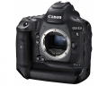
EOS-1D X Mark II
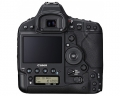
EOS-1D X Mark II
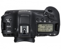
EOS-1D X Mark II
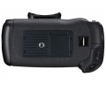
EOS-1D X Mark II
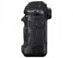
EOS-1D X Mark II
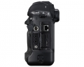
EOS-1D X Mark II
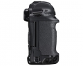
EOS-1D X Mark II
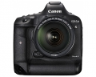
EOS-1D X Mark II
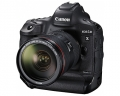
EOS-1D X Mark II
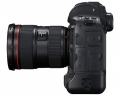
EOS-1D X Mark II
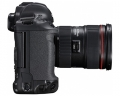
EOS-1D X Mark II
评测 / 相关文章
- 详细内容 （存档）
- ［资讯］外媒高感测试：1Dx Mark II VS D5 （存档）
- ［资讯］佳能EOS-1D X Mark II真机图赏 （存档）
- ［行情］老婆给了五万块 购买器材真叫爽 （存档）
- ［资讯］IR公布尼康D5与1DX高感对比测试 （存档）
- ［行情］佳能1DX Mark II国内预订 （存档）
- ［资讯］佳能80D与1DXII发布现场实录 （存档）
- ［试用］捷克人的1DX2 最新试用报告 （存档）
- ［资讯］佳能EOS-1D X Mark II官方样片欣赏 （存档）
相关文章
- ［资讯］强势逆袭 DP公布1DXII画质测试 （原站已下线）
- ［试用］佳能EOS-1D X Mark II实拍样片 （原站已下线）
- ［资讯］外媒高感测试：1Dx Mark II VS D5 （存档）
- ［资讯］佳能EOS-1D X Mark II真机图赏 （存档）
- ［行情］老婆给了五万块 购买器材真叫爽 （存档）
- ［试用］稳中有突破 佳能旗舰1DX II评测 （原站已下线）
- ［资讯］IR公布尼康D5与1DX高感对比测试 （存档）
- ［行情］佳能1DX Mark II国内预订 （存档）
- ［资讯］佳能80D与1DXII发布现场实录 （存档）
- ［试用］捷克人的1DX2 最新试用报告 （存档）
- ［试用］体育旗舰大对决 1DX2 VS D5 （存档）
- ［行情］佳能1DX Mark II机身再爆冰点价 （原站已下线）
- ［资讯］佳能将解决1DXII用闪迪CFast出错问题 （原站已下线）
- ［试用］把妹利器 为佳能1DX挑无线实时控制器 （存档）
- ［行情］佳能1DX Mark II机身价格再创新低 （原站已下线）
- ［资讯］尼康更胜一筹 DP对焦测试D5 VS 1DXII （原站已下线）
- ［试用］用1DXII记录马球赛场的激情瞬间 （原站已下线）
- ［资讯］佳能发布EOS-1D X Mark II （存档）
- ［资讯］佳能EOS-1D X Mark II官方样片欣赏 （存档）
- ［试用］佳能1DX2 弱光舞台好帮手 （原站已下线）
- ［影像］佳能1DX2 弱光舞台拍摄图集 （原站已下线）
- ［试用］带着佳能1DxII去巴西拍摄野生动物 （原站已下线）
- ［试用］顶级体验 聆听体育摄影师的点滴心得 （原站已下线）
- ［试用］从职业摄影师的角度聊聊EOS-1DX Mark Ⅱ （原站已下线）
- ［试用］带佳能1DX II 非洲肯尼亚之行 （原站已下线）
- ［试用］感受速度的王者 （原站已下线）
- ［试用］佳能1DX2尼康D5索尼A9画质对比 （原站已下线）
- ［资讯］三强争霸 A9/1DXII/D5宽容度比较 （存档）
- ［试用］旗舰东瀛之旅 1DX Mark II使用体会 （原站已下线）